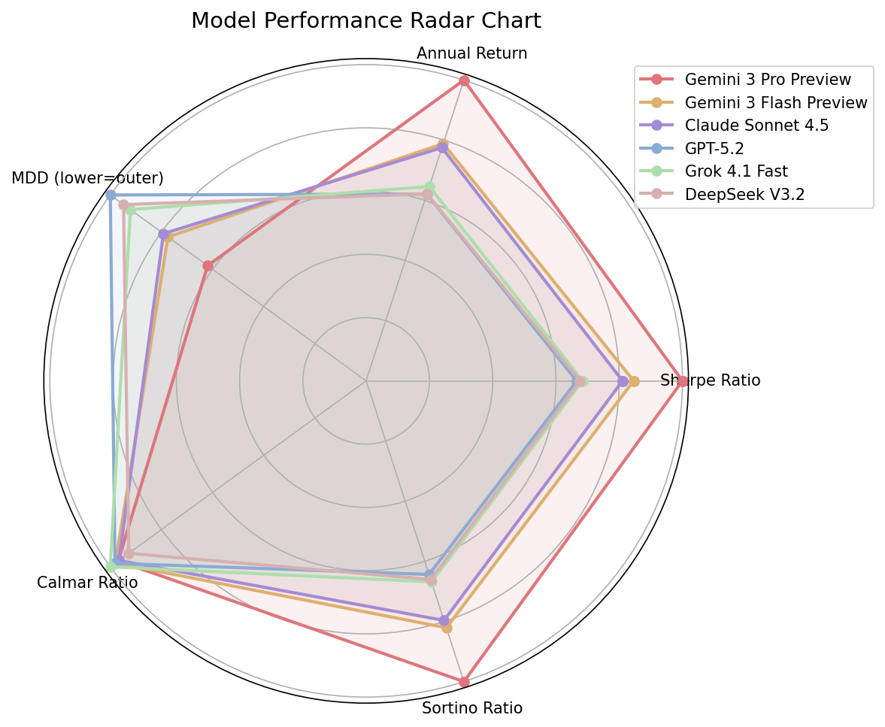
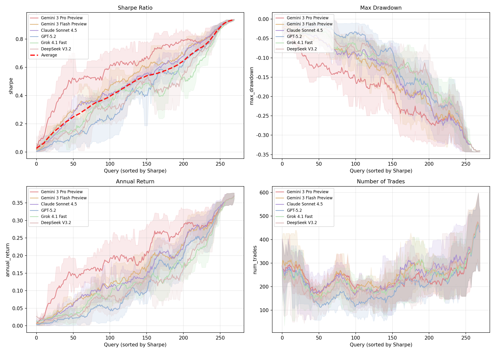

The rapid advancement of Large Language Models (LLMs) has catalyzed the proliferation of diverse financial benchmarks, progressively evolving from static knowledge evaluation to increasingly sophisticated interactive trading simulations. Nevertheless, existing frameworks that assess real-time trading performance largely overlook a fundamental failure mode: the severe behavioral instability exhibited by LLMs in sequential decision-making under financial uncertainty. Through extensive empirical investigation, we demonstrate that when deployed as direct trading agents, LLMs manifest extreme run-to-run variance, produce inconsistent action sequences even under strictly deterministic decoding configurations, and exhibit irrational action flipping across temporally adjacent decision steps. We introduce AlphaForgeBench, a principled evaluation framework that reconceptualizes the role of LLMs from stochastic execution agents to quantitative researchers capable of systematic financial reasoning. Rather than requiring models to emit discrete trading actions, AlphaForgeBench tasks LLMs with generating executable alpha factors and composing factor-based trading strategies grounded in financial domain knowledge. Extensive experiments demonstrate that AlphaForgeBench effectively eliminates execution-induced instability and provides a rigorous benchmark for assessing financial reasoning, strategy formulation, and alpha discovery.
The overall framework of AlphaForgeBench is organized around a simple but important reframing: instead of asking LLMs to emit step-by-step trading actions directly, we ask them to behave like quantitative researchers that generate executable alpha factors and factor-based trading strategies. This decouples financial reasoning from sequential action noise and turns evaluation into a stable, replayable code-generation problem.
Stage 1 collects natural-language financial queries with ground-truth alpha factors and trading strategies from real-world sources. Stage 2 systematically generates augmented queries across a 3 × 3 level-grade taxonomy, so the benchmark moves from direct translation to underspecified, goal-oriented strategy design under controlled difficulty.
In the evaluation pipeline, each query is fed to the tested model to produce executable factor code and strategy code. The generated implementations are then executed in a standardized backtest engine across seven assets and multiple market regimes, yielding a multi-metric profile over SR, ARR, MDD, CR, SoR, and VOL. Because downstream execution is deterministic, decoding stochasticity is confined to the generation step instead of propagating into unstable action-by-action behavior.
Together, these components make it possible to compare frontier models on authentic financial reasoning while still diagnosing how they respond to progressively underspecified strategy-design tasks.
The overall block reveals four key observations that extend and sharpen the Stage 1 findings. The same model ranking observed in Stage 1 recurs, the return-risk inversion persists, the T = 0 and T = 0.7 columns yield near-identical values across models and metrics, and the benchmark exposes distinct risk profiles rather than a single scalar ordering.
The grouped visual analyses further show a monotonically widening inter-model spread across difficulty levels, stable per-model behavior across temperatures, and persistent separation between strong and weak models under repeated generation.
Stage 1 overall performance on 633 real-world queries. Higher is better for SR / ARR / CR / SoR; lower is better for MDD / VOL.
| Model | SR ↑ | ARR ↑ | MDD ↓ | CR ↑ | SoR ↑ | VOL ↓ |
|---|---|---|---|---|---|---|
| claude-sonnet-4.5 | 0.378 ± 0.268 | 0.138 ± 0.122 | 0.138 ± 0.122 | 1.456 ± 1.106 | 0.636 ± 0.488 | 0.187 ± 0.165 |
| deepseek-v3.2 | 0.329 ± 0.272 | 0.116 ± 0.122 | 0.114 ± 0.120 | 1.575 ± 1.227 | 0.548 ± 0.494 | 0.155 ± 0.163 |
| gemini-3-flash-preview | 0.388 ± 0.268 | 0.142 ± 0.122 | 0.138 ± 0.119 | 1.504 ± 1.131 | 0.648 ± 0.488 | 0.189 ± 0.161 |
| gemini-3-pro-preview | 0.449 ± 0.262 | 0.171 ± 0.123 | 0.174 ± 0.119 | 1.411 ± 1.165 | 0.767 ± 0.493 | 0.237 ± 0.162 |
| gpt-5.2 | 0.342 ± 0.279 | 0.123 ± 0.119 | 0.122 ± 0.118 | 1.534 ± 1.386 | 0.575 ± 0.503 | 0.166 ± 0.161 |
| grok-4.1-fast | 0.366 ± 0.276 | 0.135 ± 0.122 | 0.142 ± 0.124 | 1.396 ± 1.038 | 0.618 ± 0.500 | 0.192 ± 0.168 |
Stage 2 overall performance on 270 LLM-augmented queries at T = 0.7. The near-match to the T = 0 block in the paper supports temperature-invariant evaluation.
| Model | SR ↑ | ARR ↑ | MDD ↓ | CR ↑ | SoR ↑ | VOL ↓ |
|---|---|---|---|---|---|---|
| claude-sonnet-4.5 | 0.508 ± 0.266 | 0.162 ± 0.113 | 0.147 ± 0.110 | 1.634 ± 0.620 | 0.795 ± 0.471 | 0.202 ± 0.152 |
| deepseek-v3.2 | 0.424 ± 0.289 | 0.130 ± 0.112 | 0.123 ± 0.109 | 1.570 ± 0.761 | 0.660 ± 0.489 | 0.168 ± 0.150 |
| gpt-5.2 | 0.417 ± 0.308 | 0.130 ± 0.121 | 0.117 ± 0.114 | 1.660 ± 0.821 | 0.643 ± 0.522 | 0.160 ± 0.157 |
| gemini-3-flash-preview | 0.530 ± 0.264 | 0.165 ± 0.113 | 0.151 ± 0.111 | 1.658 ± 1.384 | 0.820 ± 0.468 | 0.206 ± 0.153 |
| gemini-3-pro-preview | 0.627 ± 0.242 | 0.209 ± 0.107 | 0.188 ± 0.104 | 1.639 ± 0.651 | 0.999 ± 0.439 | 0.259 ± 0.143 |
| grok-4.1-fast | 0.429 ± 0.267 | 0.135 ± 0.107 | 0.127 ± 0.102 | 1.692 ± 0.819 | 0.668 ± 0.457 | 0.173 ± 0.140 |

At τ = 0.7, the radar profile still preserves a clear return-risk structure across all five metrics. gemini-3-pro-preview spans the broadest polygon on return-oriented axes, while more conservative models remain extended on the drawdown side, showing that model differences are visible even under stochastic decoding.
Distinct risk profiles remain clearly separated. The aggressive, balanced, and conservative archetypes are still readable in this setting, which means the benchmark continues to expose differences in strategy-generation behavior rather than collapsing models into a single average pattern.
At τ = 0.7, the aligned cumulative return curves still show persistent and substantial inter-model separation. The vertical gap between the strongest and weakest trajectories remains much larger than any individual uncertainty band, indicating that performance gaps are driven by capability differences rather than random variation.
Shaded bands denote the 25th–75th percentile range over 5 runs. Even under sampling, the bands remain comparatively narrow and the ordering stays visually stable, which shows that the augmented-query setting continues to separate strong and weak models in a reproducible way.

Temperature-invariant evaluation. The τ = 0 and τ = 0.7 results are near-identical across models, metrics, and difficulty levels.
Systematic difficulty progression. The inter-model spread widens monotonically from Level 1 through Level 3, confirming that the 3 × 3 taxonomy separates models along a controlled cognitive-demand axis.
Cross-level ranking reversals reveal dissociable capabilities. Translation-strong models do not necessarily remain strong on open-ended strategy design, and vice versa.
Three archetypal risk profiles are intrinsic and reproducible. The aggressive, balanced-stable, and conservative-rigid patterns persist across stages, assets, and decoding regimes.
We presented AlphaForgeBench, a benchmark that reframes LLM evaluation in quantitative finance from black-box action emission to white-box strategy code generation, requiring models to produce executable alpha factors and trading strategies that are evaluated via standardized backtesting. Experiments on 903 queries (633 real-world + 270 difficulty-stratified via a 3 × 3 level–grade taxonomy), six frontier LLMs, and seven assets spanning cryptocurrency and US equity markets (35,190 total implementations) demonstrate that the code-generation paradigm is temperature-invariant, highly reproducible, and more discriminative than direct-trading baselines. Key findings include a monotonically widening capability spread across difficulty levels, cross-level ranking reversals exposing dissociable cognitive skills, and three archetypal risk profiles that persist across stages, assets, and decoding regimes. Future work will expand AlphaForgeBench to multi-asset portfolio queries and additional asset classes, establish live-market forward-testing, and support iterative strategy refinement via backtest feedback, bridging the gap to real-world deployment and providing a foundation for rigorous financial AI assessment.
@inproceedings{zhang2026alphaforgebench,
title={AlphaForgeBench: Benchmarking End-to-End Trading Strategy Design with Large Language Models},
author = {Zhang, Wentao and Zhao, Mingxuan and Gao, Jincheng and You, Jieshun and Jia, Huaiyu and Zhao, Yilei and An, Bo and Sun, Shuo},
booktitle={Proceedings of the 32nd ACM SIGKDD Conference on Knowledge Discovery and Data Mining},
year={2026}
}